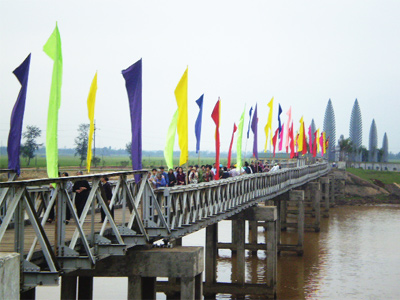
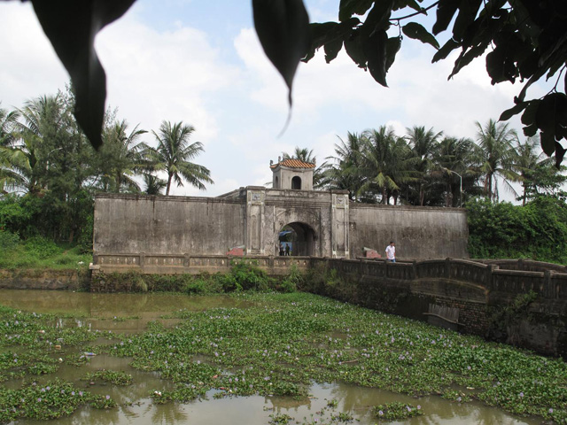
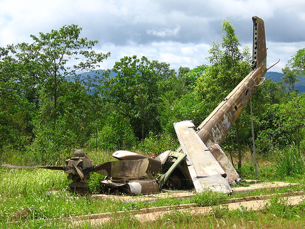
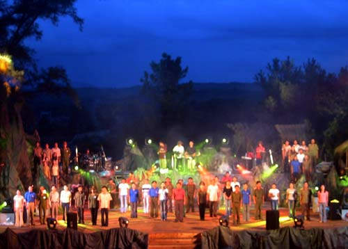

CULTURAL HERITAGE QUANG TRI

In the recent past and in the present, there is a countryside of Quang Tri - "Sanctuary" of Central Vietnam, Quang Tri Citadel pink, Quang Tri with steel Luy Vinh Linh, Quang Tri is located deep in thetunnel ... And Quang Tri has a soaring folk songs, fresh new colors culture stirred the hearts of all those who have ever set foot on this land.Formed and developed on the land between the "intestines" central part of the country, where non-preferential nature, which is usually fierce battle of many wars have forged Quang Tri human traitsnotable specific characteristics: tenacity, indomitable courage, intelligence in the war because of large means; hardworking, creative self-reliance in the production and construction of life, the soul inlight, idyllic, air concept, outspoken frankness and iron out of ink faithful son.
From a Japanese district Nam Han Dynasty to the time of becoming a provincial administrative units current integrity (8 districts, 2 towns with more than 60 thousand people), we can say Quang Tri tastemost of the ups and downs of life. But perhaps the ups and downs that have been taken over by people's resilience sandy soil wind pipe. Traditional hard, suffered hard was formed for Quang Tri a skill not yield to difficulties, hardships and disaster beyond victory or enemy sabotage. Survival and development process of Quang Tri is the process of self-conquest, struggle, to assert his creativity. Sense of trust in tomorrow "skin and hair growth, longer shoots tree" has become the foundation for the Quang Tri transcends all and win.In the fight water retention and water, the people of Quang Tri generation promote traditional fight, defense of the homeland were forged over thousands of years of history. They bravely fought and sacrificed for the independence and freedom of their native country. They made me to take more glorious victories glorious history of Quang Tri homeland.
Quang Tri People also have a tradition of hospitality, in the land development conditions extremely difficult, even tough school of hard training is valuable traditions of the people of Quang Tri from centuries. Therefore, Quang Tri is the home of many famous celebrity science and land of Vietnam.
Today, the historical value of the precious traditions of the people of Quang Tri has been a great spiritual motivation encouraging young people in the way to build more prosperous homeland, rich and beautiful.

Cultural identity of Quang Tri has a mark, saturated soil conditions and the domain of the wind pipe - white sand.
In the cultural heritage objects and intangible cultural heritage of Quang Tri, revolutionary war is huge, fully worthy to stand in the position of the leading places of the country and the world. Moreover, Quang Tri is also known for the typical heritage and captivating.
It is the Thach Han, the famous river in Quang Tri province. Derived from the East Truong Son (south west of the province), the river flowing down and met Rao Quan River, then to the river Cam Lo, Dong Ha town, before you flush the sea through the door Viet Yen. According to the researchers, between the source Thach Han a barrier reef circuit, so the river was named after this feature. Thach Han River is the lifeblood important waterway of Quang Tri, grill areas north of the oil and is "natural moat create a" Northern Citadel. In 1836, King Minh Mang chose Thach Han is one of the country's nine spots to adorn Nine top. In fiery summer 1972, Thach Han river has become glorious, hug on thousands of the country's elite, as they brave crossing the river under enemy fire lanes, according to the call of war. Red blood mixed with the water. Meat and bone dissolves into the soil. They forever lie down for aspirations self do.Hang five reunification anniversary, Quang Tri celebrated drop flower bulbs, flower friends on the river, remember the thousands of martyrs sacrificed when crossing the Thach Han .
500m Thach Han River south of Highway 1A approximately 2 km to the east is also a famous: Quang Tri Citadel. According to history books, this is a military stronghold, and is also the administrative headquarters of the Nguyen Dynasty in Quang Tri land 1809-1945 period. In 1809, when King Gia Long moved from the first position in the Citadel wards Seer (Trieu, Trieu Phong) to Thach Han (now Ward 2, Quang Tri Town), is covered by land. In 1827, King Minh Mang for rebuilt of brick. Square-shaped neck, 18 hectares, perimeter wall is 418 subjects 6 yards (approximately 2,000 m), high 1 staff 94 yards. Four original 4 protrude fort. After the terrible rain of bombs of the enemy, the rest of the stock is down some walls, gates money, post ... Instead ancient citadel, a monument was erected to commemorate the thousands of people was killed in battle 81 day and night to protect the neck.

It was Khe Sanh, a valley in each direction is less than 10km, four surface coincides mountains Messages, slots waters from the mountains flow. It is more than 40 years ago as an integral base occupied by the United States with more entrenched as the airport were still, Lang Vay, floral ... But Khe Sanh victory of our army and people have contributed to strategic smashed "local wars" tactical "looking away", "average" American. The remnants of war in our Museum here is still and the entries were veterans of both this and the other side ..
According streak 9 - Khe Sanh, passing through the villages of ethnic Pa Koh, Van Kieu, Ta Oi ..., mysterious beyond Dakrong line with how fairy tale, epic at km 65, stop raw cotton, Ta Long, Dakrong, a supply Truong Son Street, Ho Chi Minh Trail almost intact from how many years ago, hidden in the deep forests of thousands u ... This is the highway for Southern battlefields class war strategy is particularly important. Starts fell 3 Dong Loc-Ha Tinh and end in Ta Thiet-Binh Phuoc. Road to be opened on 19.5.1959 by Truong Son 559 teams in charge. The road has a total system length 16.000km including 5 axis vertical, 21 horizontal and 3100km road special camouflage to the car during the day, Total rocks digging is 29trieu m3, filling 80,000 craters, destroyed 20,600 slow braised fruit explosion, Magnetic, aircraft shot down and wounded 2450. The number of bombs dropped in the strategy of "Vietnam War" is 3 million tons of bombs, not to mention thousands of liters of defoliants had Sugar cam.Con "" over 2 million unique visitors, tens of thousands of convoy , millions of tons of food, gunfire support for the Southern battlefields. And also a big loss: 19.000nguoi sacrifice, injured 32.000nguoi same following sequelae of war. Today, right next to the supply line "relics" legendary war is the intersection of 21st-century Ho Chi Minh Highway and Trans-Asia route. A supply line connecting the past with the future legend brilliant.

Besides the cultural heritage revolutionary war, the typical heritage, colorful culture, of Quang Tri land also is adorned by the spirit of carnival, the home crowd. It is the traditional folk festivals such as Chinese New Year, Tet Doan Ngo; New Year dinner; Cau Ngu festival; religious festivals such as the Vu Lan ceremony, procession of Our Lady of La Vang; revolutionary and festivals calendar use development is being formed as the festival "drinking water, remember its source", "Legends of the Annamite realm" commemorating martyrs Invalids 27-7 in the form of drop flowers on the Thach Han river; festival "Unity young river "at double the Ben Hai river. In addition to the aforementioned festival, in Quang Tri, there are folk games usually take place in the New Year. New Year, many villages celebrate, happy spring: Run hard, swinging, playing cards games, boat racing, opera, wrestling, cock fighting ...